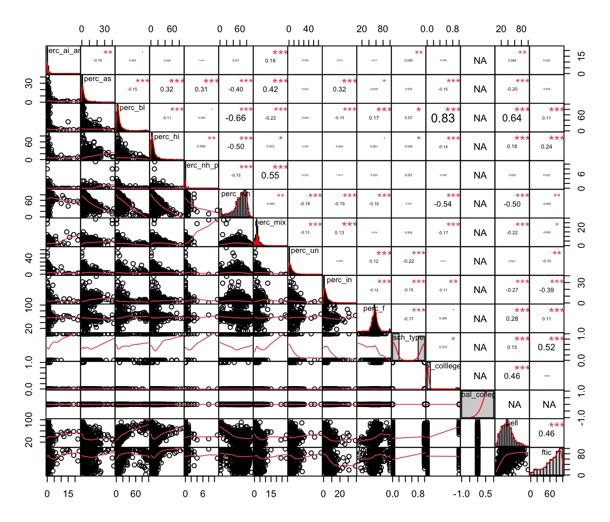
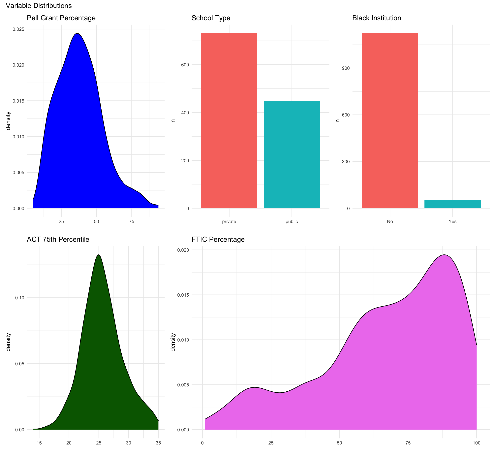
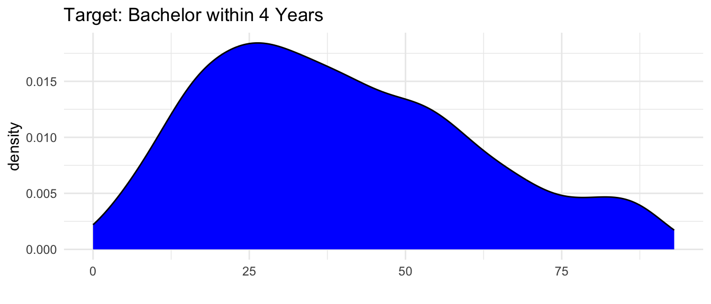
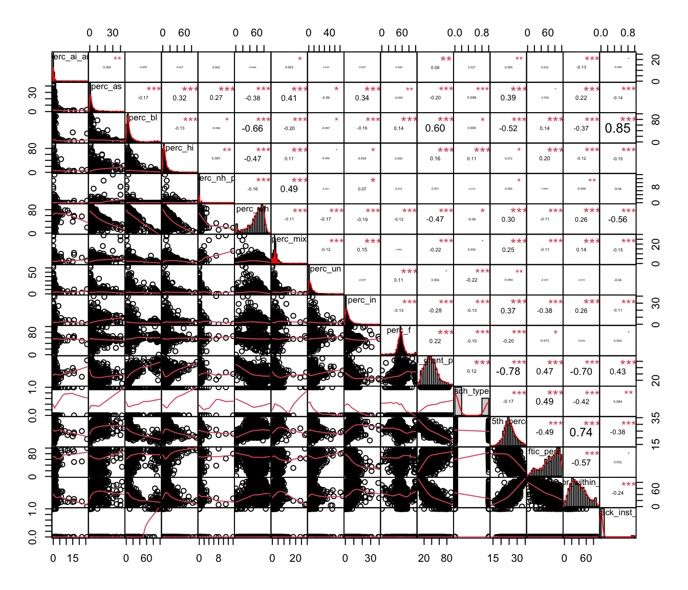
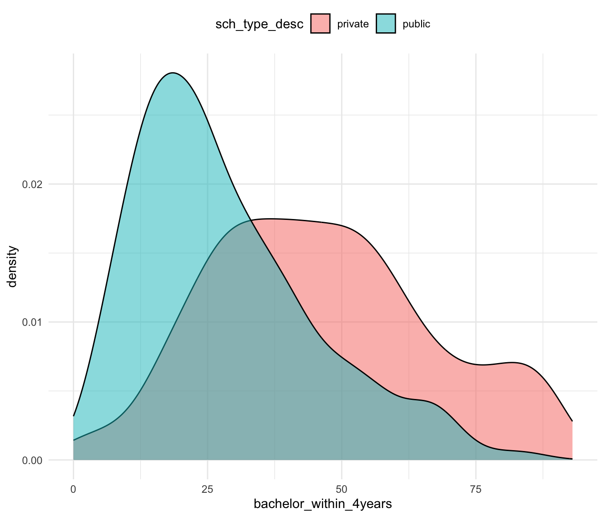
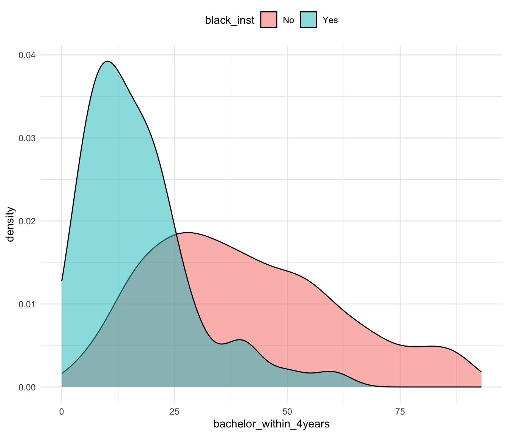
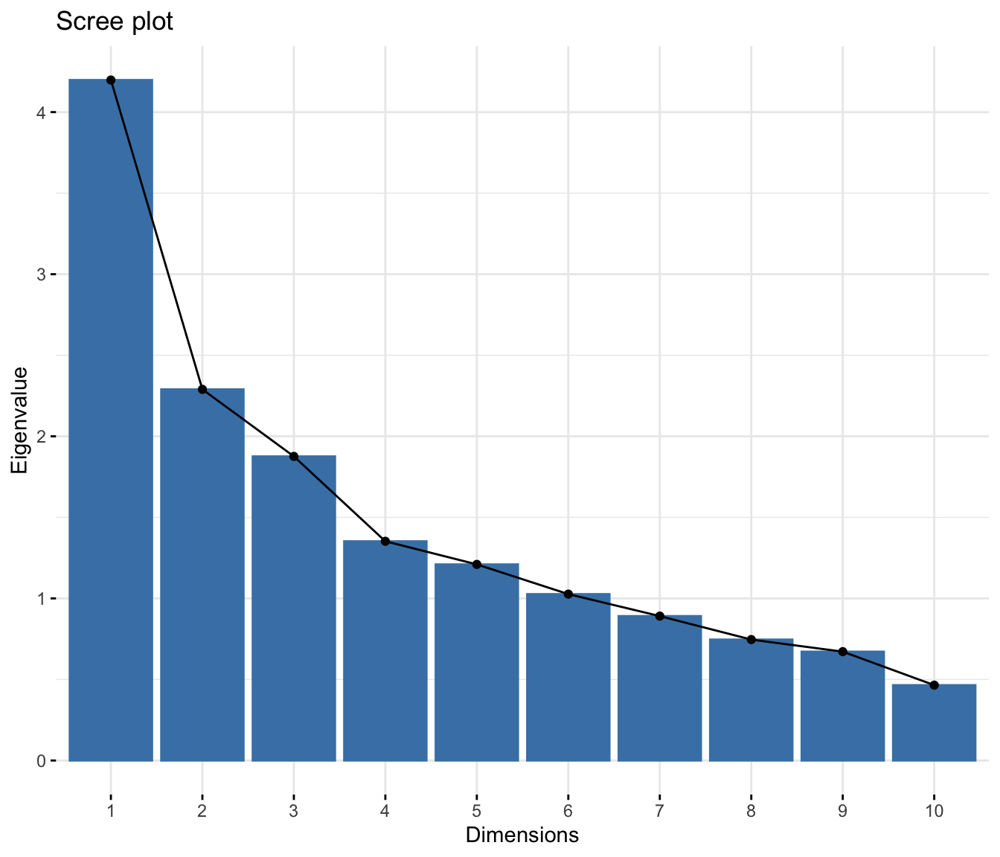
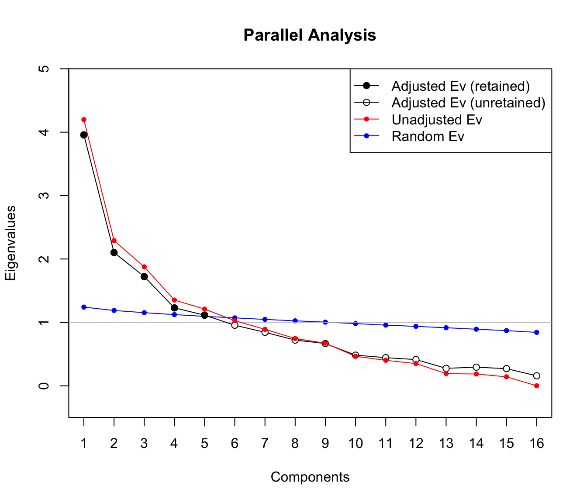
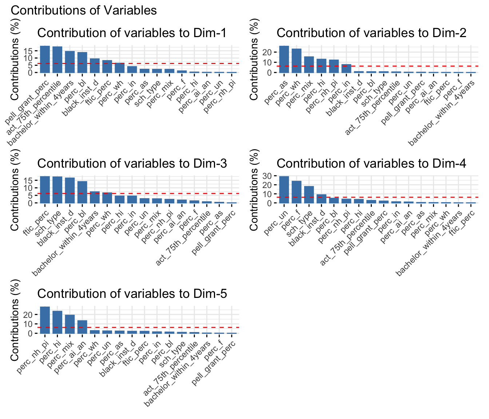

Code
## Clear environment
rm(list = ls())## Clear environment
rm(list = ls())The notebook is to execute exploratory data analysis for IPEDS data.
Data source: IPEDS
R code: Github
Loading necessary libraries for data wrangling and visualization.
libs <- c('openxlsx', "stringr", # read/write data
'skimr', "PerformanceAnalytics", "corrplot", # exploring data
"dplyr", "stringr", "glue", # data manipulation
'gt', 'ggplot2', "patchwork", "psych", # data visualization
"naniar", "mice", # missing data analysis
"stats", "paran", "factoextra", # feature selection
"rsample", "glmnet") # predictive analysis
invisible(lapply(libs, library, character.only = TRUE))Create helper functions to facilitate an analysis
# negation of %in%
'%!in%' <- function(x,y)!('%in%'(x,y))
# prevent clashes with other packages
select <- dplyr::select
# Sanity check custom function
sanity_check <- function(data, type, vars) {
library(dplyr)
enquo_cols <- enquos(vars)
if(type == "missing"){
# Check missing values
n_missing <- data %>% summarise(n = sum(is.na({{vars}})))
print(paste0("The number of missing value in", " ", deparse(substitute(vars)), " ", "is", " ", toString(n_missing)))
data %>% filter(is.na({{vars}})) %>% return()
} else if(type == "duplication"){
# Check duplicated values
n_dup <- data %>% group_by_at(enquo_cols) %>% tally() %>% filter(n > 1) %>% select({{vars}}) %>% with(nrow(.))
print(paste0("The unique number of duplicated value", " is ", toString(n_dup)))
dup_list <- data %>% group_by_at(enquo_cols) %>% tally() %>% filter(n > 1) %>% select({{vars}})
data %>% inner_join(dup_list, by = names(select(., {{vars}}))) %>% return()
} else if (type == "skim") {
# Skim data
skimr::skim(data) %>% return()
}
}Importing data for our analysis.
ipeds <- read.xlsx("../data/IPEDS_data.xlsx") The first thing I want to do is to look at the actual data in its raw form. It will show the types of features I am dealing with (numeric, categorical, string, etc.), as well as will reveal some characteristics of the dataset. This includes the process of missing data analysis.
I start by examining the data through the skimr tool. It allows us to see the data types involved and the shape of the data.
skim(ipeds) %>% summary()| Name | ipeds |
| Number of rows | 1534 |
| Number of columns | 145 |
| _______________________ | |
| Column type frequency: | |
| character | 27 |
| numeric | 118 |
| ________________________ | |
| Group variables | None |
I find:
ID.number column with appears to be an unique identifier.ID.number)Let’s select only “useful” information from the data
ipeds %>%
select(Religious.affiliation, Level.of.institution, Control.of.institution, Historically.Black.College.or.University, Tribal.college) %>%
names() %>%
data.frame() %>% rename("Categorical Variables" = ".") %>%
gt()| Categorical Variables |
|---|
| Religious.affiliation |
| Level.of.institution |
| Control.of.institution |
| Historically.Black.College.or.University |
| Tribal.college |
Categorical variables selection:
Religious.affiliation: to which religion is the school affiliated (e.g. Churches of Christ)Level.of.institution: the level of degree being offered (e.g. Four or more years)Copntrol.of.institution: indicates whether it is private or public schoolHistorically.Black.College.or.University: indicates whether it is historically black institutionTribal.college: indicates whether the college is affiliated with a tribeipeds %>%
select(ID.number, Enrolled.total, ACT.Composite.75th.percentile.score, contains("Percent.of.undergraduate.enrollment.that.are."), `Number.of.first-time.undergraduates.-.in-state`, `Graduation.rate.-.Bachelor.degree.within.4.years,.total`, Percent.of.freshmen.receiving.Pell.grants) %>%
names() %>%
data.frame() %>% rename("Numeric Variables" = ".") %>%
gt()| Numeric Variables |
|---|
| ID.number |
| Enrolled.total |
| ACT.Composite.75th.percentile.score |
| Percent.of.undergraduate.enrollment.that.are.American.Indian.or.Alaska.Native |
| Percent.of.undergraduate.enrollment.that.are.Asian |
| Percent.of.undergraduate.enrollment.that.are.Black.or.African.American |
| Percent.of.undergraduate.enrollment.that.are.Hispanic/Latino |
| Percent.of.undergraduate.enrollment.that.are.Native.Hawaiian.or.Other.Pacific.Islander |
| Percent.of.undergraduate.enrollment.that.are.White |
| Percent.of.undergraduate.enrollment.that.are.two.or.more.races |
| Percent.of.undergraduate.enrollment.that.are.Race/ethnicity.unknown |
| Percent.of.undergraduate.enrollment.that.are.Nonresident.Alien |
| Percent.of.undergraduate.enrollment.that.are.Asian/Native.Hawaiian/Pacific.Islander |
| Percent.of.undergraduate.enrollment.that.are.women |
| Number.of.first-time.undergraduates.-.in-state |
| Graduation.rate.-.Bachelor.degree.within.4.years,.total |
| Percent.of.freshmen.receiving.Pell.grants |
Numeric variables selection:
ID.number: the school unique identifierEnrolled.total: the number of student who were actually enrolledACT.Composite.75th.percentile.score: 75th percentile composite ACT scorePercent.of.undergraduate.enrollment.that.are: variables indicate the percentage of ethnicity of undergraduate who enrolledNumber.of.first-time.undergraduates.-.in-state: indicates the number of in-state undergraduates who are included in the group of “first-time college entrants”Graduation.rate.-.Bachelor.degree.within.4.years,.total: the percentage of undergraduates graduating within 4 yearsPercent.of.freshmen.receiving.Pell.grants: the percentage of freshmen who received the Federal Pell Grant## Change the nambes of variables
ipeds_sub <- ipeds %>%
select(id = ID.number,
bach = `Offers.Bachelor's.degree`,
enrolled_total = Enrolled.total,
act_75th_percentile = ACT.Composite.75th.percentile.score,
contains("Percent.of.undergraduate.enrollment.that.are."),
ftic_perc = `Percent.of.first-time.undergraduates.-.in-state`,
bachelor_within_4years = `Graduation.rate.-.Bachelor.degree.within.4.years,.total`,
pell_grant_perc = Percent.of.freshmen.receiving.Pell.grants,
religion = Religious.affiliation,
edu_level = Level.of.institution,
sch_type = Control.of.institution,
black_inst = Historically.Black.College.or.University,
tribal_inst = Tribal.college) %>%
rename("perc_ai_an" = Percent.of.undergraduate.enrollment.that.are.American.Indian.or.Alaska.Native,
"perc_as" = Percent.of.undergraduate.enrollment.that.are.Asian,
"perc_bl" = Percent.of.undergraduate.enrollment.that.are.Black.or.African.American,
"perc_hi" = `Percent.of.undergraduate.enrollment.that.are.Hispanic/Latino`,
"perc_nh_pi" = Percent.of.undergraduate.enrollment.that.are.Native.Hawaiian.or.Other.Pacific.Islander,
"perc_wh" = Percent.of.undergraduate.enrollment.that.are.White,
"perc_mix" = Percent.of.undergraduate.enrollment.that.are.two.or.more.races,
"perc_un" = `Percent.of.undergraduate.enrollment.that.are.Race/ethnicity.unknown`,
"perc_in" = Percent.of.undergraduate.enrollment.that.are.Nonresident.Alien,
"perc_f" = Percent.of.undergraduate.enrollment.that.are.women
) %>%
mutate(sch_type = ifelse(sch_type == "Public", 1, 0)) %>%
select(-`Percent.of.undergraduate.enrollment.that.are.Asian/Native.Hawaiian/Pacific.Islander`)
## Feature transformation
ipeds_sub <- ipeds_sub %>%
mutate(across(is.character, as.factor)) Let’s have a closer look at those missing values. How many are there in total in the dataset?
miss_var_summary(ipeds_sub %>% filter(!is.na(enrolled_total), enrolled_total != 0) %>% filter(bach == "Yes")) %>% data.frame() %>% gt()| variable | n_miss | pct_miss |
|---|---|---|
| ftic_perc | 517 | 37.5726744 |
| act_75th_percentile | 177 | 12.8633721 |
| bachelor_within_4years | 9 | 0.6540698 |
| pell_grant_perc | 3 | 0.2180233 |
| id | 0 | 0.0000000 |
| bach | 0 | 0.0000000 |
| enrolled_total | 0 | 0.0000000 |
| perc_ai_an | 0 | 0.0000000 |
| perc_as | 0 | 0.0000000 |
| perc_bl | 0 | 0.0000000 |
| perc_hi | 0 | 0.0000000 |
| perc_nh_pi | 0 | 0.0000000 |
| perc_wh | 0 | 0.0000000 |
| perc_mix | 0 | 0.0000000 |
| perc_un | 0 | 0.0000000 |
| perc_in | 0 | 0.0000000 |
| perc_f | 0 | 0.0000000 |
| religion | 0 | 0.0000000 |
| edu_level | 0 | 0.0000000 |
| sch_type | 0 | 0.0000000 |
| black_inst | 0 | 0.0000000 |
| tribal_inst | 0 | 0.0000000 |
There are various missing values in most of the columns. In this case, it is good to categorize them into the types of missing data.
I find:
pell_grant_perc: MCAR, hard to figure out the rationale of the missing data due to its small number (3 NAs) – will be removed from the datasetbachelor_within_4years: MCAR, as other related columns (Bachelor_within_5years and Bachelor_within_6years) are also empty, it appears that these entries were not reported – will be removed from the datasetact_75th_percentile: MAR, some applicants chose to take either the SAT or ACT for their college admission requirements. Assuming that the SAT score is positively correlated with the ACT score, multiple imputation will be conducted to fill in the blank.ftic_perc: the ftic_perc column contains a significant number of missing values, accounting for 37.6% of the data. To address this issue, we should investigate potential methods for imputing these missing values. While we currently lack information regarding any potential issues during the data collection process, it might be beneficial to explore insights from the dataset, such as information available in other columns, in order to assist with imputation. Following columns are potential variables which might be related to the ftic_perc - any ethnic properties, school type, pell_grant_percfoo <- ipeds %>%
filter(!is.na(Enrolled.total)) %>%
filter(!is.na(`Offers.Bachelor's.degree`)) %>%
filter(!is.na(`Percent.of.first-time.undergraduates.-.in-state`)) %>%
filter(!is.na(Percent.of.freshmen.receiving.Pell.grants)) %>%
select(contains("Percent.of.undergraduate.enrollment.that.are."),
Control.of.institution,
Historically.Black.College.or.University,
Tribal.college,
Percent.of.freshmen.receiving.Pell.grants,
`Percent.of.first-time.undergraduates.-.in-state`) %>%
mutate(Control.of.institution = ifelse(Control.of.institution == "Public", 1, 0),
Historically.Black.College.or.University = ifelse(Historically.Black.College.or.University == "Yes", 1, 0),
Tribal.college = ifelse(Tribal.college == "Yes", 1, 0)) %>%
rename("perc_ai_an" = Percent.of.undergraduate.enrollment.that.are.American.Indian.or.Alaska.Native,
"perc_as" = Percent.of.undergraduate.enrollment.that.are.Asian,
"perc_bl" = Percent.of.undergraduate.enrollment.that.are.Black.or.African.American,
"perc_hi" = `Percent.of.undergraduate.enrollment.that.are.Hispanic/Latino`,
"perc_nh_pi" = Percent.of.undergraduate.enrollment.that.are.Native.Hawaiian.or.Other.Pacific.Islander,
"perc_wh" = Percent.of.undergraduate.enrollment.that.are.White,
"perc_mix" = Percent.of.undergraduate.enrollment.that.are.two.or.more.races,
"perc_un" = `Percent.of.undergraduate.enrollment.that.are.Race/ethnicity.unknown`,
"perc_in" = Percent.of.undergraduate.enrollment.that.are.Nonresident.Alien,
"perc_f" = Percent.of.undergraduate.enrollment.that.are.women,
"bl_colllege" = Historically.Black.College.or.University,
"tribal_college" = Tribal.college,
"sch_type" = Control.of.institution,
"pell" = Percent.of.freshmen.receiving.Pell.grants,
"ftic" = `Percent.of.first-time.undergraduates.-.in-state`
) %>%
select(-`Percent.of.undergraduate.enrollment.that.are.Asian/Native.Hawaiian/Pacific.Islander`)
chart.Correlation(foo, histogram=TRUE)
As indicated in the correlation chart above, the top three variables associated with ftic are school_type (public or private), pell_grant_perc, and perc_in (non-resident alien). This findings align with my expectation for several reasons. First, non-resident aliens, who are international students, typically attend college in their home countries before attending college in the US. Second, students who can afford the tuition at multiple colleges are generally ineligible for the Pell Grant.
foo %>%
group_by(sch_type) %>%
summarise(mean(ftic),
median(ftic)) %>%
data.frame() %>%
gt()| sch_type | mean.ftic. | median.ftic. |
|---|---|---|
| 0 | 56.04018 | 59.5 |
| 1 | 81.93154 | 87.0 |
The most interesting variables is ‘school_type.’ In this analysis, I have defined “1” as public and “0” as private school. Notably, the proportion of ftic students is significantly higher in public schools. Here, we may hypothesize that students who already possess a bachelor’s degree tend to opt for private colleges, which are perceived to offer higher educational quality. Please note that this assumption is for the purpose of explaining the result and may be open to debate.
Based on the finding and the assumption, I define the missing values in ftic column as MAR and will conduct the multiple imputation using school_type, pell_grant_perc, and perc_in.
Simply remove the cases with NAs in such columns - pell_grant_pec, bachelor_within_4years
ipeds_sub_ld <- ipeds_sub %>%
filter(enrolled_total != 0,
!is.na(enrolled_total)) %>%
filter(bach == "Yes") %>%
filter(!is.na(pell_grant_perc)) %>% # remove NA cases from pell_grant_perc
filter(!is.na(bachelor_within_4years)) # remove NA cases from bachelor_within_4years
ipeds_sub_ld %>% select(pell_grant_perc, bachelor_within_4years) %>% miss_var_summary() %>% data.frame() %>% gt()| variable | n_miss | pct_miss |
|---|---|---|
| pell_grant_perc | 0 | 0 |
| bachelor_within_4years | 0 | 0 |
Let’s create sat_comp variable to combine all the SAT scores and conduct an univariate imputation with the combined sat score.
Imputation information is below:
ipeds_sat <- ipeds %>%
select(ID.number,
SAT.Critical.Reading.75th.percentile.score,
SAT.Math.75th.percentile.score,
SAT.Writing.75th.percentile.score) %>%
rename(id = ID.number,
sat_read = SAT.Critical.Reading.75th.percentile.score,
sat_math = SAT.Math.75th.percentile.score,
sat_writing = SAT.Writing.75th.percentile.score) %>%
mutate(sat_comp = rowMeans(subset(., select = c(sat_read, sat_math, sat_writing)), na.rm = TRUE))
ipeds_sub_ld_sat <- ipeds_sub_ld %>%
left_join(ipeds_sat, by = "id")
ipeds_sub_ld_sat_cleaned <- ipeds_sub_ld_sat %>%
mutate(drop = ifelse(is.nan(sat_comp), 1, 0)) %>%
filter(drop == 0)
imp <- mice(ipeds_sub_ld_sat_cleaned %>% select(act_75th_percentile, sat_comp),
m = 10,
maxit = 10,
defaultMethod = "pmm",
printFlag = FALSE)
print(imp)Class: mids
Number of multiple imputations: 10
Imputation methods:
act_75th_percentile sat_comp
"pmm" ""
PredictorMatrix:
act_75th_percentile sat_comp
act_75th_percentile 0 1
sat_comp 1 0ipeds_sub_ld_sat_cleaned_act <- ipeds_sub_ld_sat_cleaned %>%
select(-c(act_75th_percentile, sat_comp)) %>%
cbind(complete(imp))Conduct multiple imputation with pecc_in, pell_grant_perc, and sch_type.
Imputation information is below:
foo <- ipeds_sub_ld_sat_cleaned_act %>% select(perc_in, pell_grant_perc, sch_type, ftic_perc)
imp <- mice(foo,
m = 10,
maxit = 10,
defaultMethod = "pmm",
printFlag = FALSE)
print(imp)Class: mids
Number of multiple imputations: 10
Imputation methods:
perc_in pell_grant_perc sch_type ftic_perc
"" "" "" "pmm"
PredictorMatrix:
perc_in pell_grant_perc sch_type ftic_perc
perc_in 0 1 1 1
pell_grant_perc 1 0 1 1
sch_type 1 1 0 1
ftic_perc 1 1 1 0ipeds_sub_ld_sat_cleaned_act_ftic <- ipeds_sub_ld_sat_cleaned_act %>%
select(-c(ftic_perc)) %>%
cbind(complete(imp) %>% select(ftic_perc)) Let’s clean the data and check the missing values again.
ipeds_sub_ld_sat_cleaned_act_ftic2 <- ipeds_sub_ld_sat_cleaned_act_ftic %>%
select(-c(bach, drop, religion, edu_level, tribal_inst,sat_read, sat_math, sat_writing)) %>%
mutate(sch_type_desc = ifelse(sch_type == 1, "public", "private")) %>%
mutate(black_inst_d = ifelse(black_inst == "Yes", 1, 0))
miss_var_summary(ipeds_sub_ld_sat_cleaned_act_ftic2) %>% data.frame() %>% gt()| variable | n_miss | pct_miss |
|---|---|---|
| id | 0 | 0 |
| enrolled_total | 0 | 0 |
| perc_ai_an | 0 | 0 |
| perc_as | 0 | 0 |
| perc_bl | 0 | 0 |
| perc_hi | 0 | 0 |
| perc_nh_pi | 0 | 0 |
| perc_wh | 0 | 0 |
| perc_mix | 0 | 0 |
| perc_un | 0 | 0 |
| perc_in | 0 | 0 |
| perc_f | 0 | 0 |
| bachelor_within_4years | 0 | 0 |
| pell_grant_perc | 0 | 0 |
| sch_type | 0 | 0 |
| black_inst | 0 | 0 |
| act_75th_percentile | 0 | 0 |
| sat_comp | 0 | 0 |
| ftic_perc | 0 | 0 |
| sch_type_desc | 0 | 0 |
| black_inst_d | 0 | 0 |
ipeds_imp <- ipeds_sub_ld_sat_cleaned_act_ftic2 No more missing value. Good!
Let’s take a look at the distribution of variables
To assemble the plots in the comprehensive, dashboard-like overview we are using the patchwork package.
p1 <- ipeds_imp %>%
ggplot(aes(pell_grant_perc)) +
geom_density(fill = "blue") +
theme_minimal() +
labs(x = "", title = "Pell Grant Percentage")
p2 <- ipeds_imp %>%
count(sch_type_desc) %>%
ggplot(aes(sch_type_desc, n, fill = sch_type_desc)) +
geom_col() +
theme_minimal() +
theme(legend.position = "none") +
labs(x = "", title = "School Type")
p3 <- ipeds_imp %>%
count(black_inst) %>%
ggplot(aes(black_inst, n, fill = black_inst)) +
geom_col() +
theme_minimal() +
theme(legend.position = "none") +
labs(x = "", title = "Black Institution")
p4 <- ipeds_imp %>%
ggplot(aes(act_75th_percentile)) +
geom_density(fill = "darkgreen") +
theme_minimal() +
labs(x = "", title = "ACT 75th Percentile")
p5 <- ipeds_imp %>%
ggplot(aes(ftic_perc)) +
geom_density(fill = "violet") +
theme_minimal() +
labs(x = "", title = "FTIC Percentage")
design <- "
ABC
DEE
"
p1 + p2 + p3 + p4 + p5 +
plot_layout(design = design) +
plot_annotation(title = "Variable Distributions")
I find:
pell_grant_percentage and act_7hth are nearly normally distributed (slightly right skewed).school_type and black_institution are boolean features.ftic_perc is severely left skewed. May need a transformation if we want to add it in our model.bachelor_within_4yearsipeds_imp %>%
ggplot(aes(bachelor_within_4years)) +
geom_density(fill = "blue") +
theme_minimal() +
labs(x = "", title = "Target: Bachelor within 4 Years")
We find:
How do the predictor features interact with each other?
When plotting a correlation matrix, we need to make sure that what we’re feeding in doesn’t include any missing values. We can specify this via the parameter use = "complete.obs":
ipeds_imp %>%
select(-c(id, enrolled_total, sat_comp, sch_type_desc)) %>%
mutate(black_inst_d = ifelse(black_inst == "Yes", 1, 0)) %>%
relocate(bachelor_within_4years, .after = ftic_perc) %>%
select(-black_inst) %>%
chart.Correlation(histogram=TRUE)
We find:
ipeds_imp %>%
select(bachelor_within_4years, sch_type_desc) %>%
ggplot(aes(bachelor_within_4years, group = sch_type_desc, fill = sch_type_desc)) +
geom_density(alpha = 0.5) +
theme_minimal() +
theme(legend.position = "top")
We find:
ipeds_imp %>%
select(bachelor_within_4years, black_inst) %>%
ggplot(aes(bachelor_within_4years, group = black_inst, fill = black_inst)) +
geom_density(alpha = 0.5) +
theme_minimal() +
theme(legend.position = "top")
We find:
Conducting Principal Component Analysis using the Horn’s Parallel Analysis.
ipeds_imp_sub <- ipeds_imp %>% select(-c(id, enrolled_total, black_inst, sat_comp, sch_type_desc))
pca_model <- prcomp(ipeds_imp_sub, scale=TRUE) summary(pca_model)Importance of components:
PC1 PC2 PC3 PC4 PC5 PC6 PC7
Standard deviation 2.0489 1.5132 1.3697 1.16298 1.09991 1.01318 0.94388
Proportion of Variance 0.2624 0.1431 0.1172 0.08453 0.07561 0.06416 0.05568
Cumulative Proportion 0.2624 0.4055 0.5227 0.60727 0.68288 0.74704 0.80272
PC8 PC9 PC10 PC11 PC12 PC13 PC14
Standard deviation 0.86375 0.81949 0.68189 0.63394 0.59236 0.43851 0.43168
Proportion of Variance 0.04663 0.04197 0.02906 0.02512 0.02193 0.01202 0.01165
Cumulative Proportion 0.84935 0.89132 0.92039 0.94550 0.96743 0.97945 0.99110
PC15 PC16
Standard deviation 0.37658 0.02486
Proportion of Variance 0.00886 0.00004
Cumulative Proportion 0.99996 1.00000get_eigenvalue(pca_model) eigenvalue variance.percent cumulative.variance.percent
Dim.1 4.1979907993 26.237442496 26.23744
Dim.2 2.2897449641 14.310906026 40.54835
Dim.3 1.8760568678 11.725355424 52.27370
Dim.4 1.3525167074 8.453229421 60.72693
Dim.5 1.2098126438 7.561329024 68.28826
Dim.6 1.0265261469 6.415788418 74.70405
Dim.7 0.8909170990 5.568231868 80.27228
Dim.8 0.7460600817 4.662875511 84.93516
Dim.9 0.6715659355 4.197287097 89.13245
Dim.10 0.4649695061 2.906059413 92.03850
Dim.11 0.4018807055 2.511754410 94.55026
Dim.12 0.3508943905 2.193089941 96.74335
Dim.13 0.1922869326 1.201793329 97.94514
Dim.14 0.1863502288 1.164688930 99.10983
Dim.15 0.1418089946 0.886306216 99.99614
Dim.16 0.0006179964 0.003862477 100.00000fviz_eig(pca_model,
choice = c("eigenvalue"),
col.var="blue")
Based on the proportion of explained variance and the scree plot using eigenvalue, 4 components seem appropriate. However, recognizing the interpretation is subjective, an additional analysis is necessary to validate its plausibility.
paran(ipeds_imp_sub, graph = TRUE, cfa = FALSE, centile = 95)
Using eigendecomposition of correlation matrix.
Computing: 10% 20% 30% 40% 50% 60% 70% 80% 90% 100%
Results of Horn's Parallel Analysis for component retention
480 iterations, using the 95 centile estimate
--------------------------------------------------
Component Adjusted Unadjusted Estimated
Eigenvalue Eigenvalue Bias
--------------------------------------------------
1 3.956765 4.197990 0.241224
2 2.101792 2.289744 0.187952
3 1.722453 1.876056 0.153603
4 1.229423 1.352516 0.123093
5 1.114384 1.209812 0.095428
--------------------------------------------------
Adjusted eigenvalues > 1 indicate dimensions to retain.
(5 components retained)
According to Horn’s Parallel Analysis, 5 components can be selected.
# Contributions of variables to PC1
pc1 <- fviz_contrib(pca_model, choice = "var", axes = 1)
# Contributions of variables to PC2
pc2 <- fviz_contrib(pca_model, choice = "var", axes = 2)
# Contributions of variables to PC3
pc3 <- fviz_contrib(pca_model, choice = "var", axes = 3)
# Contributions of variables to PC4
pc4 <- fviz_contrib(pca_model, choice = "var", axes = 4)
# Contributions of variables to PC5
pc5 <- fviz_contrib(pca_model, choice = "var", axes = 5)
pc1 + pc2 + pc3 + pc4 + pc5 +
plot_layout(ncol = 2) +
plot_annotation(title = "Contributions of Variables")